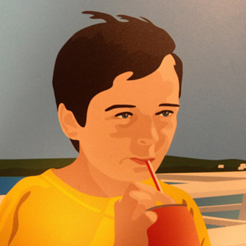
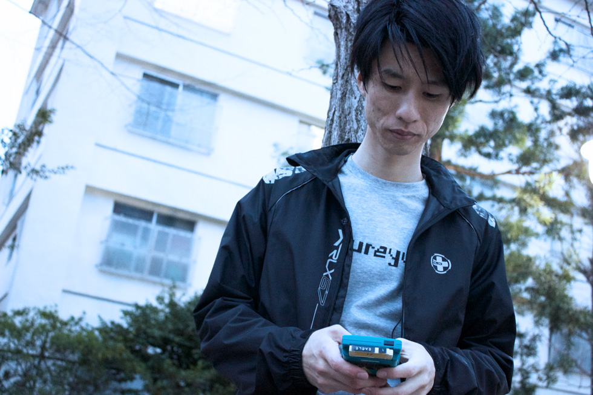
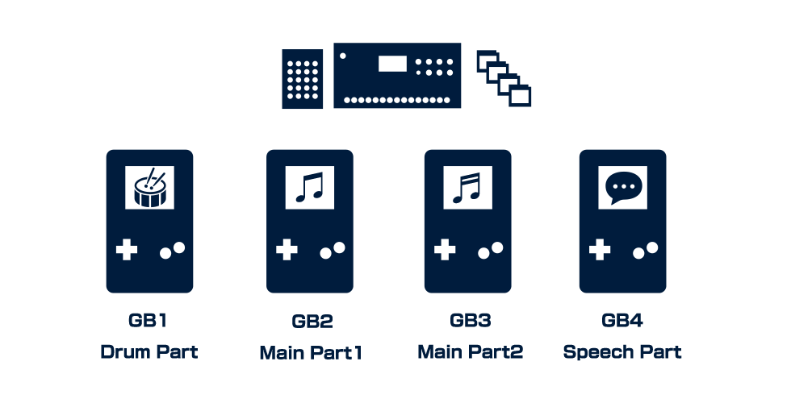
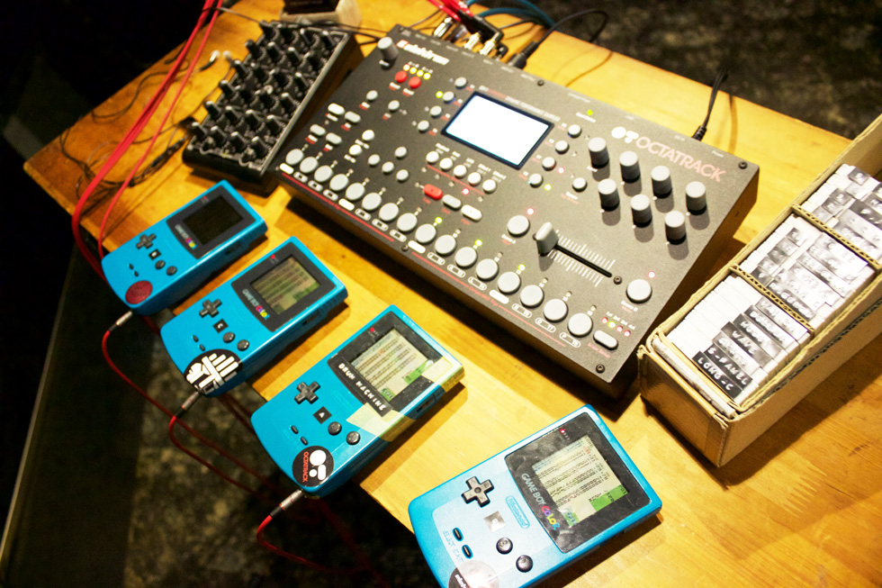
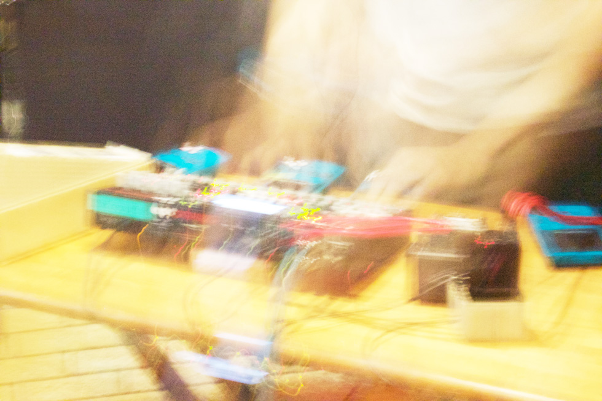
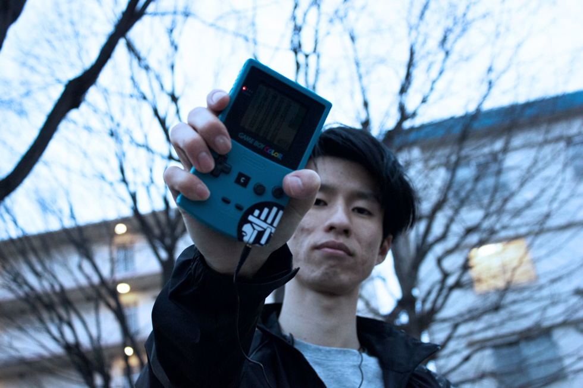

ureyu
His music career started from 2007. He did the first gig in 2011. Since then, through joining monthly event "technique," his setup mainly consisting of four Game Boys and one Octatrack has been improved. In 2014, the first EP was released from Tokyo Electro Beat Park. He also has high DIY skill to make a wooden CD case.
"ureyu" is an artist whose appeal is his live performance using four GBs changing looks rapidly
We requested a long interview with you, ureyu. Now your latest work is just released from ESC TRAX. We will take more time to do it than usual, so its content should be richer!

"In my childhood, I could not get used to learning the piano. Until I was a middle school student, I lived a life in which I didn't watch music programs so much."
- ――You have been involved in live performances, as well as DJing and organizing events. Were you very interested in music as a kid?
- In my childhood, I took piano lessons, but could not get used to the instrument. Until I was a middle school student, I lived a life in which I didn't watch music programs so much.
Then, in high school, I gradually became interested in music. I got information from SPACE SHOWER TV [a music channel] or others, and then came to listen to mainly electronica-like bands such as Mum and Lemon Jelly.
- Also, I followed 19-t [a music label] with ardor at that time. Especially SHEX was my favorite.
I guess I gradually became interested in making music around this time.
Nanoloop compilation album borrowed from Janis led me to having an interest in chiptune.
- ――And then, how did you get into chiptune?
- Then I got so involved with music furthermore due to me belonging to a DJ circle during college:
Meeting persons who often went to Fourth Floor [a Tokyo club] or getting along with a clerk working at a CD rental shop called Janis in Ochanomizu and listening to the person...
At that time, the albums of nanoloop compilation and cow'p borrowed from the shop led me to having an interest in chiptune.
That's why I firstly started making music after buying a nanoloop cart.
But ... I came to wonder if its sound is something different from my goal and did searches. Meanwhile, I met LSDj and this led me to my current compositional style.
This work is composed of four GBs, each of them is assigned a role.
- ――Your live performance is different from general chiptune artists; specifically, it seems you run more than one GB simultaneously. Could you tell us your setup?
- For example, I assigned each role to four GBs in this work as follows:

- Basically, I alternately play tracks from between GB2 and GB3 like a DJ mix.
And GB1, drum part, is added to the currently playing track.
GB4 is used for a certain track which needs speech part or two GB carts.
On my many GB carts, each has one track.

- ――How do you apply effects in the middle?
- Output from four GBs is inputted into an Octatrack via four headphone amplifiers.
The Octatrack is used both as a mixer and an effector.
With a faderfox MIDI controller, I control its effect parameters, which are mainly EQ, reverb, and filters.
The crossfader is used for switching tracks and the buttons are used for freeze delay. - The high degree of freedom of an Octatrack is very useful because it can apply LFO to filters and effects to each input.
I once played gigs using a 4ch DJ mixer, but it has few effects available while I was playing, so I eventually changed to the current setup as above.
This live-set contains uncertain factors somewhere
- ――Your setup looks pretty large-scale. On your performance, anything you pay attention to?
- In my performance, I try to let my live-set contain uncertain factors somewhere.
For example, if you sound kicks in Wave and Pulse channels of LSDj together, you will slightly hear beat sound. But you cannot always get the same.
Against I entirely control my sound, I am interested in such uncertainty happens in real time. - Also, you can synchronize tempos via a GB cable. Actually, I manually synch GBs using pushing buttons.
That's because thanks to such hand motion, I am not needed to compose my live-set strictly and it also lifts my spirit with flexible control.

The work can be said to be the culmination of my GB live performances at this moment.
- ――The latest release Cross Creaks is not a usual album consisting of separate tracks, but has a form of a non-stop live performance. Tell us the details about it?
- It can be said that this is the culmination of my GB live performances at this moment.
- Most of the tracks in the album were made during the time I was hooked on composition at 120BPM.
Then I started thinking I'd like to mix fast tracks above 160BPM with them, so this is reflected in the composition of the album, which speeds up in progression.
120BPM part is centered on a dark image, while I composed 160BPM or above part with another image - you are struck by balls of dust. - I usually produce my tracks, considering how they are used in my gigs. Existing tracks are combined with the set of tracks after reworked like my real live-set.
For example, some ones called untitled were initially started making for it and unfinished themselves. - When producing the release, I thought of "creaks of groove" derived from mixture between tracks or overlapping with sounds like the title suggests.
Besides chiptune, your gear is only played like you commanded in a kind of electronic music with prepared programming.
So I always care about any new possible ways in order not to feel frustrated about that on making my live-set. - I will add changes to it bit by bit from now on.
- ――Thank you. We think this recording is full of excitements from your gigs. Is there anything you want to do in the future or do you have a vision?
- Well...
Through using 808kit and 909kit in LSDj, I came to have an interest in sounds specific to real machines, so in the future, I want to continue my production, which would bring out characteristics of my electronic instruments other than GB. - ――We are looking forward to your further tracks with real machines. Thank you very much!

【ureyu - discography】
Editing, writing: ESC TRAX / Photographing: Terminal Connect / Translating: Akaobi